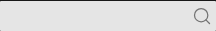

기존 모습은 유지하고, 흐려지는 상태만 수정
DS-016 본문·제목 유지 · DS-017 검색 호버 적용 완료먼저, 확정한 기존 타이포
학사 일정과 연구 프로그램
지원자는 신청 기간과 제출 서류를 먼저 확인해 주세요. 프로그램의 일정과 참여 조건을 읽고 담당자에게 문의해 주세요.
본문 14px/400/28px · 글 제목 20px/600/28px · 보조 정보 13px/400.
앞으로는 명확한 접근성·통일성·사용성 문제가 없으면 기존 디자인을 유지한다. 더 커 보이거나 숫자가 다르다는 이유만으로 바꾸지 않는다.
해결한 문제와 적용 범위
수정 전 문제: 헤더의 돋보기는 마우스를 올리면 흰색으로 바뀐다. 바로 뒤 검색 바가 밝은 #e5e5e5여서 아이콘이 흐려진다. 실제 한국어·영어 화면에서 같은 상태를 확인했다.
변경 이유: 검색 실행을 식별하는 그림과 배경의 대비가 기본 약 3.76:1에서 호버 약 1.26:1로 낮아진다. WCAG 1.4.11의 비텍스트 대비 설명은 식별에 필요한 그림과 배경의 대비 3:1을 요구하며, 호버 때문에 그 식별 대비가 부족해지지 않아야 한다고 설명한다.
적용 범위: 헤더 검색 한곳에서만 기본 #737373은 유지하고 호버 때 기존 팔레트의 #404040으로 진해지게 한다. 기본 모습·형태·선 굵기·크기·검색 동작은 그대로다.
호버 전후의 색끼리 3:1을 만들거나 새로운 호버 효과를 추가해야 한다는 뜻은 아니다. 기존 버튼의 색 변화 반응은 유지하되, 그림이 흐려지지 않게 진해지는 방향으로 수정한다. 전체 사이트 접근성 판정은 별도다.
호버 피드백 반영: 처음의 같은 회색 유지안은 색 변화까지 없앴다. 수정안은 더 진한 회색으로 반응을 보여준다.
직접 마우스를 올려보기
실제 검색 바 비교
평소 모습 · 유지

수정 전 호버 · 흰색으로 흐려짐
DS-017 적용 · 더 진한 회색
{kind=link}
{kind=link}
확정 · DS-017 적용 완료
헤더 검색은 기본 #737373 → 호버 #404040으로 진해진다.
기존의 색 변화 피드백을 유지하면서 식별 대비 문제를 해결했다. 공용 quiet 버튼 전체의 호버는 바꾸지 않는다.